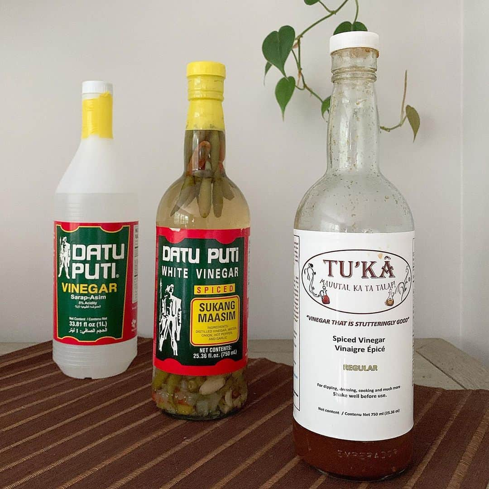
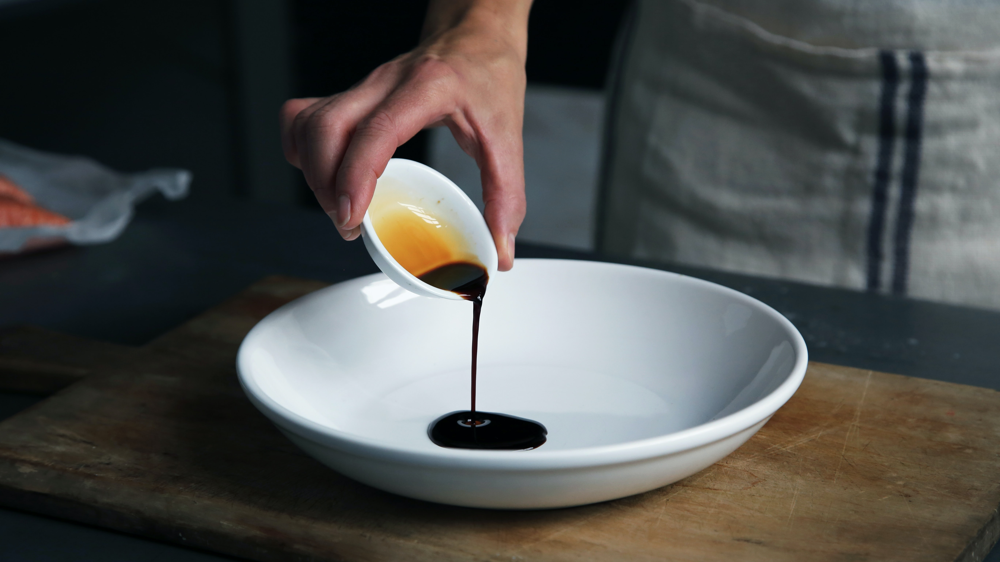

How to Cook
Pork Adobo?
by Edzel DC. Domingo
BSIS3A - IS WEBD313

| Ingredient | Quantity | Picture |
|---|---|---|
| Vegetable oil | 2 tablespoons |  |
| Pork shoulder (cut into chunks) | 2 pounds |  |
| Cane vinegar or white vinegar | ¼ cup |  |
| Low sodium soy sauce | ¼ cup |  |
| Garlic | 6 cloves |  |
| bay leaf | 1 piece |  |
| Black peppercorns | 2 teaspoons |  |
| Sugar | 2 teaspoons |  |
| Water | 2 cups |  |

In a medium dutch oven or pot over medium high heat, add the oil and sear the pork until browned on all sides.
Add the vinegar, low sodium soy sauce, garlic, bay leaf, black peppercorns, sugar, and water, and bring to a boil.
Reduce the heat to medium low, cover, and simmer for 1 hour. Remove the cover and continue simmering for another 30 minutes to reduce the sauce.

Serve over rice and eat while it is hot. Enjoy the classic all-time favorite food of every Filipinos, Adobo!